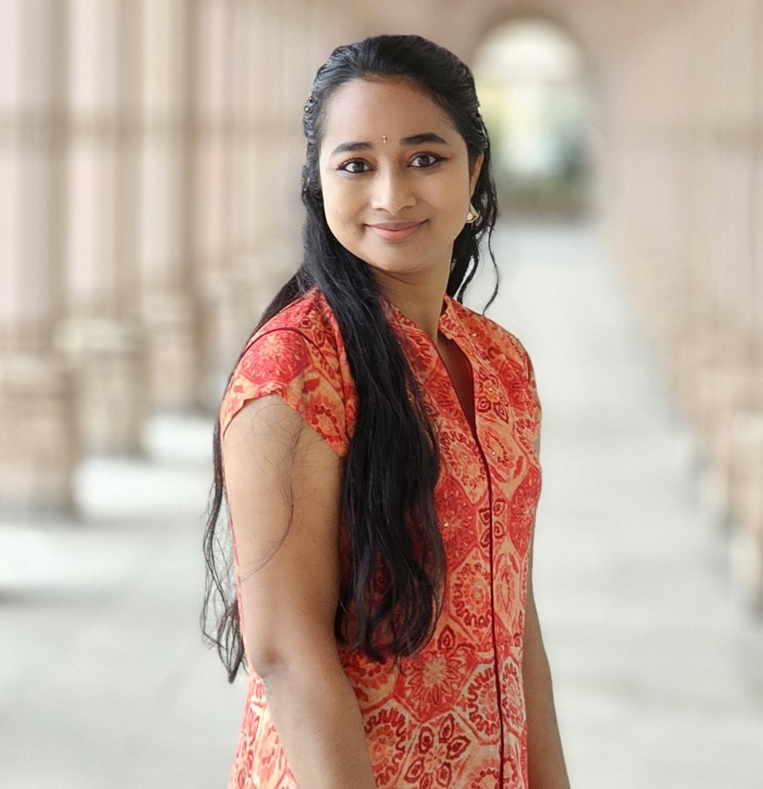
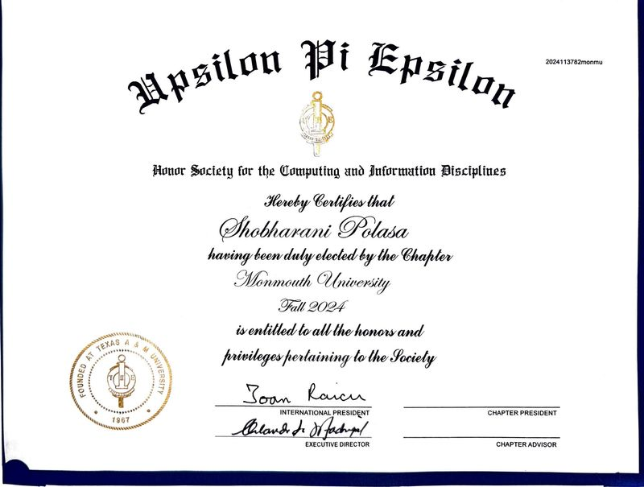
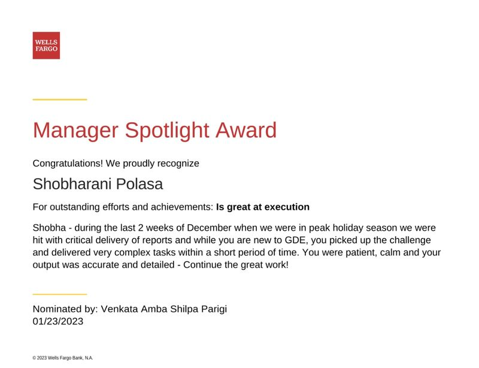

Shobharani Polasa
| Shobharani Polasa | |||||||||||||||||||||
| Data Scientist · AI Researcher · IEEE Author | |||||||||||||||||||||
|
 Shobharani Polasa
| |||||||||||||||||||||
| |||||||||||||||||||||
Shobharani Polasa is an American data scientist, machine learning engineer, and IEEE-published researcher with over 12 years of experience delivering end-to-end predictive modeling, ML engineering, causal inference, and experimentation frameworks across financial services, enterprise, and academic research environments. She is currently a Data Science Consultant at Infosys, serving Bank of America, based in Plano, Texas.
Shobharani holds a Master of Science in Data Science & AI (GPA: 3.93/4.00) from Monmouth University (2024) and a Bachelor of Science in Software Engineering from Swami Vivekananda Institute of Technology, India. She has co-authored two peer-reviewed publications with the Institute of Electrical and Electronics Engineers (IEEE), both focused on multimodal machine learning for sports analytics and athlete injury prediction. She is a member of Upsilon Pi Epsilon (UPE), the International Honor Society for Computing and Information Disciplines, inducted in recognition of her academic excellence.
Over her 12-year career, Shobharani has held data science, analytics, and engineering roles at some of the world's largest and most respected organisations, including Bank of America, Wells Fargo, JPMorgan Chase & Co., Deloitte, Kantar (TNS India), and Monmouth University. She has received four industry awards recognising innovation, operational excellence, and leadership — from Wells Fargo, JPMorgan Chase, Deloitte, and Kantar respectively.
Shobharani's technical expertise spans the full modern data science stack: machine learning algorithms including deep neural networks, XGBoost, and ensemble methods; cloud platforms (AWS, GCP, Azure); big data infrastructure (Hadoop, Spark, Hive, Kafka); data engineering pipelines (Apache Airflow, NiFi, Talend, Informatica); and data visualisation tools (Tableau, Power BI, Looker). She programs proficiently in Python, R, SQL, Scala, Java, and JavaScript, and holds multiple industry certifications including AWS Certified Data Analytics, Tableau Analyst, and Alteryx Designer.
Her primary research contribution is the Predictive Athlete Readiness for Tennis (PART) framework — a weighted ensemble learning system that integrates wearable sensor data, player surveys, physical performance tests, match statistics, and video analysis to generate injury risk scores and performance predictions. Published in the IEEE Systems, Man, and Cybernetics Magazine (2026) and presented at IEEE ICHMS 2025, the PART framework achieved R² = 0.84 and AUC-ROC = 0.79 in validation, demonstrating meaningful predictive power for coaching and sports medicine applications.
Shobharani is a strong advocate for responsible AI, championing model transparency, bias mitigation, and ethical data governance across enterprise engagements. She has mentored graduate students at Monmouth University and led internal workshops at financial services firms on MLOps, experimental design, and scalable analytics architecture. She is based in Plano, Texas, and is active on LinkedIn, GitHub, and Kaggle.
Contents
Professional Summary
Shobharani brings a rare combination of technical depth, cross-industry leadership, and a relentless bias for measurable, data-informed impact. Her expertise spans the full ML lifecycle — from hypothesis design through production deployment — with deep specialisation in Python, R, SQL, Spark, TensorFlow, Keras, XGBoost, and cloud platforms including AWS, GCP, and Azure. She has a proven track record leading cross-functional teams and driving high-impact analytics solutions across financial services, enterprise technology, and academic research.[1]
"Bringing together statistical rigor, engineering precision, and business strategy to turn data into decisions."
Her areas of deep expertise include A/B testing and experimentation frameworks, statistical analysis, ML pipeline engineering, big data technologies (Hadoop, Hive, Spark, Kafka), and data visualisation (Tableau, Power BI). As a published IEEE researcher in multimodal machine learning, she bridges the gap between cutting-edge academic research and enterprise-grade deployment.
Shobharani is distinguished by her ability to operate fluently at both the strategic and technical layers of data science — translating ambiguous business challenges into structured analytical problems, then delivering production-ready solutions with rigorous validation. Her work at firms including Wells Fargo, JPMorgan Chase, and Bank of America demonstrates consistent excellence in applying machine learning to high-stakes financial environments where accuracy, governance, and scalability are paramount. She is a strong advocate for responsible AI, championing model transparency, bias mitigation, and ethical data practices across every engagement.
Impact at a Glance
Across 12+ years and four Fortune 500 organisations, Shobharani has consistently delivered quantifiable improvements in performance, efficiency, and innovation. The table below summarises her most significant measurable contributions — from A/B-tested campaign improvements at Wells Fargo to peer-reviewed predictive model accuracy published in the IEEE Systems, Man, and Cybernetics Magazine.
| Metric | Achievement | Context |
|---|---|---|
| 65% product performance improvement | Structured A/B experimentation | Wells Fargo, 2022–2023 |
| 75% injury prevention improvement | Tableau dashboards for athlete analytics | Monmouth University, 2023–2024 |
| 30% efficiency increase | Scalable cross-functional analytics deployment | Wells Fargo, 2022–2023 |
| 20% turnaround time reduction | High-impact analytics reporting | Wells Fargo Manager Spotlight Award, Jan 2023 |
| R² = 0.84 · AUC-ROC = 0.79 | XGBoost predictive model for athlete performance | Monmouth University / IEEE Research, 2024 |
| 2 IEEE publications | Peer-reviewed multimodal ML research | ICHMS 2025 · SMC Magazine 2026 |
| 4 industry awards | Excellence, innovation, and leadership recognition | Wells Fargo · JPMorgan · Deloitte · Kantar |
| 12+ years of experience | End-to-end ML and data science delivery | Financial services, enterprise, academia |
Education
| Degree | Institution | Year | Details |
|---|---|---|---|
| M.S. Data Science & AI | Monmouth University, West Long Branch, NJ, USA | 2023–2024 | GPA: 3.93 / 4.00 · Department of Computer Science & Software Engineering · Member, Upsilon Pi Epsilon Honor Society |
| B.S. Software Engineering | Swami Vivekananda Institute of Technology, India | 2009–2013 | Foundation in software development, algorithms, and systems engineering. Coursework in data structures, object-oriented programming, operating systems, computer networks, and database management. |
Career
Shobharani has over 12 years of professional experience spanning data science, machine learning engineering, analytics consulting, and software development. She has worked across leading global organisations including Infosys, Wells Fargo, JPMorgan Chase, Deloitte, and TNS India. Across every role, she has combined rigorous analytical methods with business acumen to deliver solutions that drive measurable operational and financial outcomes.
Infosys (Client: Bank of America) – 2025–Present
Since January 2025, Shobharani has served as a Data Science Consultant at Infosys, embedded with Bank of America in Plano, Texas. In this role she provides strategic leadership for AI-driven analytics operations, aligning execution with organisational mission and long-term business objectives. She leads cross-functional initiatives, forges partnerships with stakeholders and community organisations, and champions sustainability in operational planning. Her work focuses on building scalable data ecosystems that support risk management, customer analytics, and regulatory compliance at an enterprise level. She advises on AI strategy, model governance frameworks, and best practices for responsible ML deployment within a highly regulated financial environment.[1]
Monmouth University – 2023–2024
As a Data Scientist in the Computer Science & Software Engineering Department at Monmouth University, Shobharani led and mentored high-performing research teams focused on sports analytics and AI-driven performance prediction. She delivered insights through interactive Tableau dashboards that improved injury prevention strategies by 75%, built and deployed predictive models for athlete performance measurement achieving R² = 0.84 and AUC-ROC = 0.79 using XGBoost, and designed data preprocessing, feature engineering, and validation frameworks using Python, Pandas, and SQL. She also taught and guided graduate students in applied machine learning, helping bridge the gap between theoretical foundations and real-world problem-solving. This role directly led to two peer-reviewed IEEE publications on multimodal injury prediction and the PART framework.[2]
Wells Fargo & Co. – 2022–2023
As a Senior Analytics Consultant, Shobharani directed experimentation and performance analysis for campaign optimisation, delivering a 65% improvement in product performance through structured A/B testing. She led cross-functional teams deploying scalable analytics solutions that increased efficiency by 30%, developed advanced analytics using Python, R, Scala, Java, SQL, and C++, and integrated AI and generative AI solutions across AWS, GCP, Azure, and IBM Watson environments. She also drove adoption of MLOps practices across the analytics organisation, establishing CI/CD pipelines for model deployment, monitoring dashboards for drift detection, and governance standards for production ML systems. She received the Manager Spotlight Award in January 2023 for delivering high-impact analytics reports while reducing turnaround time by 20%.[1]
JPMorgan Chase & Co. – 2021–2022
As a Team Leader, Shobharani designed and implemented operational strategies that improved productivity, service quality, and team performance. She oversaw workflow and infrastructure improvements to enhance operational efficiency, built and deployed full-stack applications and API services, and leveraged big data technologies including HDFS, Hive, Spark, and Scala for large-scale data processing. She partnered with finance and risk teams on budgeting, resource allocation, and cost optimisation, translating complex data requirements into actionable analytics products used by decision-makers across the organisation. She received the Excellence Award in August 2021 as winner of JPMorgan's Monthly Rewards & Recognition Program for exceptional client focus and outstanding results.[1]
Deloitte Support Services India Pvt. Ltd. – 2019–2021
As a Senior Data Analyst, Shobharani directed site data operations and analytics for KPI tracking, continuous improvement, and operational readiness. She ensured compliance with health, safety, and regulatory standards across campus operations, directed site services and facilities management, and established KPIs to measure operational effectiveness. Her most notable contribution was transforming the UK DTS utilisation dashboard from a single-site tool into a comprehensive enterprise-wide solution used across multiple regions — a project that earned her the Innovation Award in November 2019. She also collaborated closely with risk and security teams on workplace protections, process automation initiatives, and data-driven policy recommendations.[1]
Earlier Roles – 2013–2019
Prior to Deloitte, Shobharani served as a Senior Business Analyst at Source One Management Services (2019), where she developed and deployed deep learning models including CNNs, RNNs, and LSTMs, implemented Advanced RAG-based solutions using LangGraph, AutoGen, and Crew AI frameworks, and delivered generative AI solutions on AWS, GCP, Azure, and IBM Watson.
As a Data Analyst at TNS India Private Ltd (2015–2018), she optimised vector databases for search and retrieval, applied computer vision and time-series analysis, and leveraged Hadoop, Hive, Spark, and Scala for large-scale analytics. At Reach Out Business Analytical Services (2013–2015) she applied advanced statistical techniques including regression and hypothesis testing and managed cloud deployments across AWS, Azure, and GCP. At Kantar she received the Positive Impact Award in May 2017 for leadership contributions to a market research project spanning global data collection, survey analysis, and client reporting.[1]
Research
Shobharani's primary research contribution lies in sports analytics and multimodal machine learning. Her work, conducted at Monmouth University in collaboration with faculty and fellow graduate researchers, demonstrates how ensemble-based AI frameworks can integrate diverse data modalities to produce more accurate and clinically useful predictions than single-modality approaches. The research has practical applications in professional and amateur tennis, with potential extensions to other individual and team sports.
The PART Framework
During her time at Monmouth University, Shobharani co-developed the Predictive Athlete Readiness for Tennis (PART) framework — a multimodal weighted ensemble learning system that integrates five data modalities:
- Wearable sensors — real-time biometric monitoring (heart rate, load, fatigue indicators)
- Player surveys — subjective wellness and readiness scores
- Physical performance tests — standardised fitness assessments
- Match statistics — in-match performance metrics
- Video analysis — movement quality and technique evaluation
PART produces a composite Athlete Readiness Score and a personalised injury risk assessment for each player, enabling coaches and sports medicine staff to intervene proactively before an injury occurs. The framework applies weighted ensemble methods to combine predictions from individual modality models, dynamically adjusting weights based on data availability and historical model performance per athlete. The system achieved R² = 0.84 and AUC-ROC = 0.79 in validation testing — substantially outperforming single-modality baselines.[2]
The PART framework has direct applications in professional tennis coaching, injury prevention programmes, and data-driven periodisation planning. Its architecture is modality-agnostic and could be extended to other sports with appropriate data pipelines.
IEEE Publications
In 2025, Shobharani co-authored "Multimodal Injury Risk Prediction in Tennis", presented at the 2025 IEEE 5th International Conference on Human-Machine Systems (ICHMS).[5] The paper presented a multimodal framework for assessing athlete readiness and predicting injury risk by integrating physiological metrics, wearable data, questionnaires, and video analysis.
In 2026, building on that conference work, Shobharani and colleagues published the expanded journal paper "Multimodal Injury Risk and Performance Prediction in Tennis Using Weighted Ensemble Learning" in the IEEE Systems, Man, and Cybernetics Magazine.[2] The journal version introduced the full PART framework with weighted ensemble learning, performance prediction alongside injury risk, and a larger validation dataset. Co-authors include Weihao Qu, Ling Zheng, Jiacun Wang (Monmouth University faculty), Dongyang Wang ('25M), and Francisco E. Alvarez ('25M).
| Year | Title | Venue | Co-authors |
|---|---|---|---|
| 2025 | Multimodal Injury Risk Prediction in Tennis | IEEE ICHMS 2025 (Conference) | F. E. Alvarez, W. Qu, J. Wang, L. Zheng |
| 2026 | Multimodal Injury Risk and Performance Prediction in Tennis Using Weighted Ensemble Learning | IEEE Systems, Man, and Cybernetics Magazine | W. Qu, L. Zheng, J. Wang, D. Wang, F. E. Alvarez |
Technical Expertise
| Domain | Technologies & Tools |
|---|---|
| Programming Languages | Python · R · SQL · C · C++ · C# · Java · JavaScript · MATLAB · HTML · Scala |
| Machine Learning | Regression · Classification · Clustering · NLP · Time Series · Deep Learning · Forecasting · Causal Inference · XGBoost · Scikit-Learn · TensorFlow · Keras · PyTorch |
| Big Data | Hadoop · HBase · Hive · Apache Spark · PySpark · Kafka · AWS Glue/EMR · Lambda · AWS Step Functions |
| Data Engineering | ETL · Apache NiFi · Apache Kafka · Apache Airflow · Talend · Informatica · AWS Glue · Azure Data Factory |
| Cloud Platforms | AWS · Google Cloud Platform (GCP) · Microsoft Azure · IBM Watson · Snowflake · Amazon Redshift · Google BigQuery |
| Databases | SQL · PostgreSQL · MySQL · Oracle · MongoDB · Cassandra · Redis · Cosmos DB · JSON/NoSQL |
| Data Visualisation | Tableau · Power BI · Matplotlib · Seaborn · Plotly · Looker · Google Data Studio |
| Libraries & Tools | Pandas · NumPy · Jupyter Notebooks · Docker · Alteryx · SPSS · QlikView |
| Methodologies | Agile · CI/CD · Version Control · A/B Testing · Experimental Design · MLOps · Model Governance |
Certifications
- Tableau Analyst Certification
- Post Graduate Certification in Data Science & AI
- AWS Certified Data Analytics
- Advanced SQL Certification
- Snowflake Data Warehousing Workshop
- Alteryx Designer Certification
- Computer Vision with TensorFlow & Keras
- Snowflake Data Lake
Awards & Recognition
Over her 12-year career, Shobharani has received multiple awards recognising excellence in analytics delivery, innovation, and leadership across four of the world's most prominent organisations.
| Award | Organisation | Date | Description |
|---|---|---|---|
| Manager Spotlight Award ★ | Wells Fargo | January 2023 | Recognised for delivering high-impact analytics reports and reducing turnaround time by 20% during peak operations. Selected from across a large analytics division for exceptional delivery under pressure. |
| Excellence Award ★ | JPMorgan Chase & Co. | August 2021 | Winner of the Monthly Rewards & Recognition Program for exceptional client focus and dedication to outstanding results. Recognised for building strong client relationships and consistently exceeding performance expectations. |
| Innovation Award ★ | Deloitte | November 2019 | Recipient for contributions to the LHF concept, client reports, and transforming the UK DTS utilisation dashboard into a comprehensive enterprise-wide solution adopted across multiple regions. |
| Positive Impact Award ★ | Kantar | May 2017 | Recognised for contributions to a global market research project, demonstrating cross-cultural teamwork, analytical rigour, and leadership in coordinating data collection and client deliverables. |
Monmouth University – Events & Research

Award Photos

Memberships
Shobharani is a member of Upsilon Pi Epsilon (UPE), Kappa Chapter — the International Honor Society for Computing and Information Disciplines. Membership is awarded in recognition of academic excellence and achievements in the fields of Computer Science, Software Engineering, and Data Science.[3]
Founded in 1967 at Texas A&M University, Upsilon Pi Epsilon is the first and only international honor society for the computing disciplines, and is affiliated with both the Association for Computing Machinery (ACM) and the IEEE Computer Society. Induction into UPE is among the most selective academic recognitions in computing — only the top students by academic performance and faculty recommendation are considered. Shobharani was inducted into the Kappa Chapter at Monmouth University in recognition of her outstanding GPA of 3.93/4.00 and her contributions to research in applied machine learning.
Mentorship & Community
Beyond her technical and research contributions, Shobharani is a committed mentor and community contributor. During her time at Monmouth University, she worked directly with graduate students in the Computer Science and Software Engineering department, guiding them on research methodology, data collection best practices, model evaluation, and scientific writing. Several of her mentees contributed to the PART research project as co-investigators.
In her consulting roles, she has consistently advocated for inclusive and accessible AI — promoting data literacy across business teams, running internal workshops on responsible ML, and championing ethical data governance. She is a strong proponent of diversifying technology leadership, recognising the importance of underrepresented voices in shaping the AI systems that will define the next generation of public and private infrastructure.
Her community engagement also extends to knowledge-sharing: she shares professional insights on LinkedIn and participates in open-source data science communities through her GitHub profile, where she maintains repositories documenting analytical methods and research tools.
News & Media
In June 2026, Monmouth University's Department of Computer Science and Software Engineering published a news article covering the IEEE research publication co-authored by Shobharani and colleagues: "CSSE Faculty and Alumni Publish on Tennis Performance and Injury Risk." The article highlighted the PART framework and its potential to help coaches and players identify injury risks and optimise training plans.[4]
"Our goal is to develop a data-driven AI framework that provides a comprehensive Athlete Readiness Score and personalized injury risk assessment for tennis players … We hope this work can help coaches and players identify potential injury risks early and make better training and recovery plans." — Monmouth University research team
The research was published in the IEEE Systems, Man, and Cybernetics Magazine, a publication of the Institute of Electrical and Electronics Engineers (IEEE) — the world's largest technical professional organisation with over 533,000 members in 190+ countries.[6]